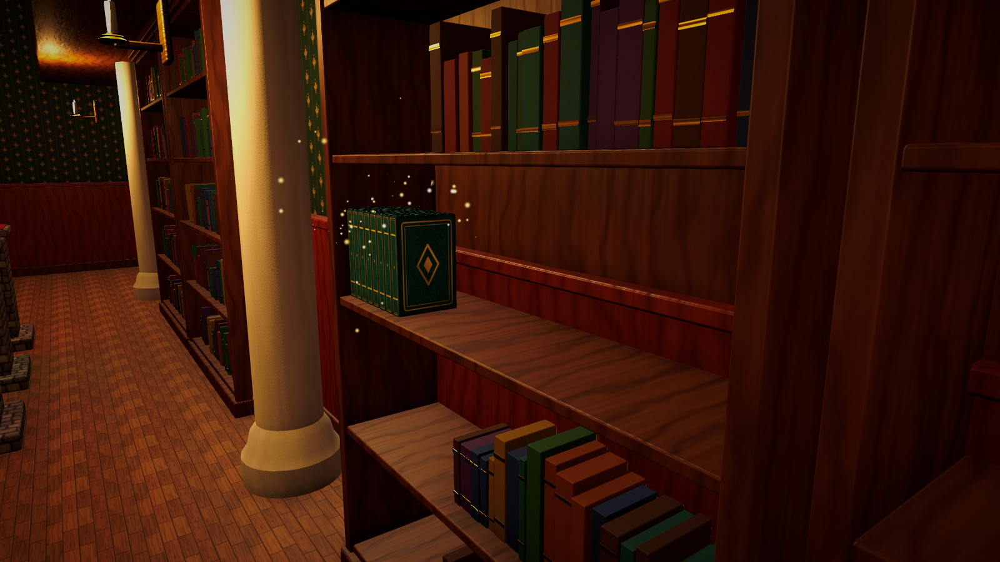

Objects, Categories & Rules
Describe what each object is once, then let rules decide where it belongs.
Creating interactive objects
What
An interactive object is any GameObject with a TidyObject component, a collider and (recommended) a kinematic Rigidbody. The component points to a TidyObjectDefinition asset that describes the object.
Why
Separating the scene instance from its definition means a hundred identical toys share one asset, rules can be written against definitions, and you can rebalance every copy at once.
How
- Model or import your prop so that its pivot is at the bottom centre. Placement aligns the bottom of an object's bounds with the surface, so other pivots work too, but bottom-centre pivots are the easiest to reason about.
- Select one or more props and run Tools > Tidy Up Framework > Make Selected Objects Interactive. It adds
TidyObject, a kinematicRigidbodyand a fittedBoxColliderwhen no collider exists, and assigns a unique instance id. - Create a definition with Create > Tidy Up Framework > Object Definition and drag it into the Definition field.
- Save the configured object as a prefab and assign it to the definition's Prefab field so tools and spawners can find it.
Object Definition fields
| Field | Purpose |
|---|---|
| Id, Display Name, Description, Icon, Display Color | Identity shared by every definition type. Ids are used by save data; the Generate Missing Definition IDs tool fills them. |
| Category | Most specific category. Parent categories match automatically. |
| Tags | Colour, size, shape, material, theme or custom tags. |
| Size, Weight, Priority | Numbers used by numeric rules, ordering and hints. |
| Sort Key, Sequence Index | Alphabetical and sequential ordering (volume numbers). Both can be overridden per instance. |
| Movable, Rotatable, Placeable, Sortable, Stackable, Inspectable, Container / Snap compatible | Capabilities. Targets refuse incompatible objects; for example a TidyStackPoint only accepts stackable objects. |
| Base Score | Points for a correct placement before multipliers. |
| Physics Profile | Controlled (arcade, predictable) or Physics (simulated) handling, mass, damping, throw speed. |
| Inspect Text | Flavour text shown in the inspect panel. |
Per-instance options on Tidy Object
| Option | Use it for |
|---|---|
| Sort Key Override / Sequence Override | "Volume 3" of a set where every volume uses the same definition. |
| Requires Discovery | Hidden items for Find Objects objectives. |
| Counts As Clutter | Trash and mess for Clear Clutter objectives and the vacuum tool. |
| Visual Root | Child transform animated by punch feedback when the root must not scale. |
| Placement Euler Offset | Corrects meshes authored lying down or facing another axis. |
Using your own props
Replacing the look of a demo prop
- Open the prop prefab, for example
Demo/Prefabs/Library/BookCantrips. - Assign your mesh and materials to its
MeshFilterandMeshRenderer, or add your model as a child and remove the old renderer. - Press Fit Box Collider in the
Tidy Objectinspector so aiming and placement match the new shape. - Save the prefab. Every placed copy in every scene updates, and the object keeps its definition, so rules, shelves and objectives still accept it.
Adding a new prop
- Duplicate an existing definition in
Demo/Data/Objects(or create one with Create > Tidy Up Framework > Object Definition), rename it and change its display name, category and tags. - Run Tools > Tidy Up Framework > Generate Missing Definition IDs. Duplicated ids are replaced with unique ones, which save data relies on.
- Import your model, run Make Selected Objects Interactive, assign the new definition and save it as a prefab.
- Place copies in the level. Objectives and targets that filter by category or tag pick the new prop up automatically; run the Level Validator to confirm every object has a valid destination.
Creating categories and tags
Categories answer "what kind of thing is this?" and form a hierarchy: Spell Books can have the parent Books, so a shelf that accepts Books also accepts spell books. Tags describe attributes that cut across categories (Red, Large, Fragile, Magic). Each tag belongs to a group (Color, Size, Shape, Material, Theme, Custom) which lets grouping rules ask for "the same colour".
- Create > Tidy Up Framework > Category. Set Display Name and Display Color (used in UI and gizmos). Optionally set a parent.
- Create > Tidy Up Framework > Tag. Choose its group.
- Add categories and tags to object definitions.
Creating sorting rules
Match filters (inline)
Every placement target and many objectives have an Acceptance or Object Filter block. It combines, with AND logic:
- Categories — any of these (including subcategories). Empty = any.
- Required Tags — all of these.
- Excluded Tags — none of these.
- Definitions — exact objects. Empty = any.
- Rule — an optional reusable rule asset.
| Designer sentence | Filter setup |
|---|---|
| Red books go here. | Categories: Books · Required Tags: Red |
| Large potion bottles go here. | Categories: Potions · Required Tags: Large |
| All vegetables go into this basket. | Categories: Vegetables |
| Objects with the MAGIC tag belong on this shelf. | Required Tags: Magic |
| Anything that is not fragile. | Excluded Tags: Fragile |
| Books A to M. | Categories: Books · Rule: an Alphabetical Range Rule A–M |
Rule assets (reusable)
| Rule | Matches when |
|---|---|
| Category Rule | The object is in any listed category. |
| Tag Rule | All / Any / None of the tags are present. |
| Exact Object Rule | The definition is one of the listed definitions. |
| Numeric Range Rule | Size, Weight, Priority or Sequence Index lies in [min, max]. |
| Alphabetical Range Rule | The sort key starts with a letter in the range. |
| Composite Rule | All / Any of child rules match, optionally inverted (NOT). |
Ordering and grouping
Targets with several positions can additionally require an order or a group. They are evaluated on the target, not on individual objects: each book can be correctly shelved while the shelf as a whole is not complete until the order is right.
| Setting | Values | Example |
|---|---|---|
| Ordering | None, Alphabetical, Sequence, Priority, Size, Weight (ascending or descending) | "Books must be sorted alphabetically", "Volumes 1–6 in order" |
| Grouping | None, Same Definition, Same Category, Same Tag In Group | "Three identical toys belong together", "one colour per bin" |

Policy: reject or accept wrong objects
RejectIncorrect bounces wrong objects back with a gentle error cue. AcceptIncorrect lets the player place them; they count as mistakes and break the combo, which suits puzzle-like games where the player discovers the rule. The placement preview can also hide correctness (Reveal Correctness on TidyPlacementPreview).
Creating custom rules
When a rule cannot be expressed with the built-in assets, derive from TidyRuleDefinition. The new rule immediately appears in the Create menu and can be used in any match filter.
using TidyUpFramework.Objects;
using TidyUpFramework.Rules;
using UnityEngine;
[CreateAssetMenu(menuName = "Tidy Up Framework/Rules/Heavier Than Rule")]
public sealed class HeavierThanRule : TidyRuleDefinition
{
[SerializeField] float minimumWeight = 5f;
public override bool Matches(TidyObject tidyObject)
{
return tidyObject != null && tidyObject.Weight > minimumWeight;
}
public override string Describe()
{
return "Heavier than " + minimumWeight;
}
}